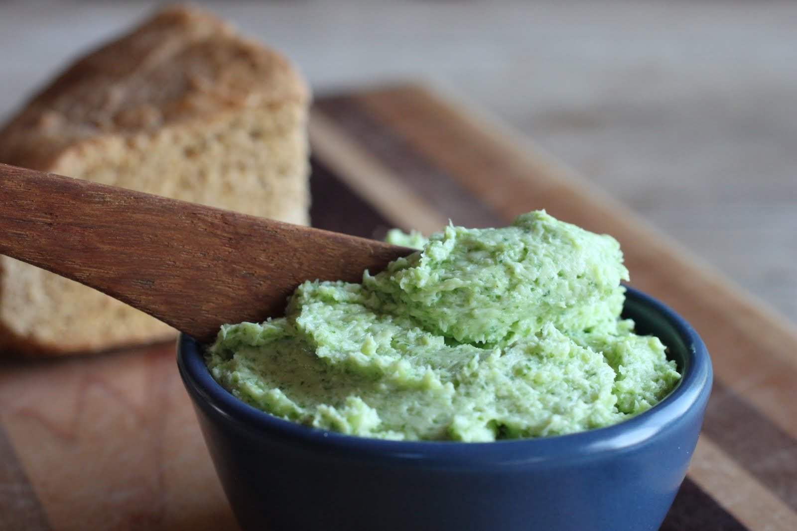

Rocket Butter

Description:
3...2...1....BLASTOFF! Congratualtions, you just landed on flavor
planet thanks to this recipe for rocket butter. Ok it's not quite
the same as that kind of rocket. We're talking about roquette (or rocket)
meaning arugula. This recipe will teach you how to make an amazing, bright green
compound butter that goes perfect with everything from steak to rice.
Ingredients
- Butter: 3 lbs
- Arugula: 300 g
- Parsley: 100 g
- White Modena Vinegar: 200 g
- Garlic : 80 g
- Baking Soda: 2 Teaspoons
- Water: 1 gallon
- Salt and pepper to taste
Special Equipment
Steps
- Remove the butter from your fridge and store in a safe place at room temperature. This is to soften the butter.
- While butter is softening, mix water and baking soda together in a large pot and bring to a boil.
- Once boiling, add arugula and parsley to blanche. Just keep them in there for a few seconds until they become a vibrant green and wilt slightly.
- Carefully remove the greens and transfer directly to an ice bath.
- Once cooled, strain any remaining liquid out of the parsley and arugula. Dispose of liquid and save parsley and arugula for later
- Add the garlic to your food processor and pulse until garlic is minced. Maybe 10 pulses.
- To the garlic add your softened butter, arugula, parsley, and vinegar
- Run the food processor until the mixture is homogenous.
- Season liberally with salt and pepper and run the food processor to incorporate these.
- Scoop out and store in the fridge for up to 1 week!
Hope you all enjoy this recipe! I look forward to hearing how you end up using your rocket butter!